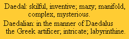

DISCOURSE NO. 2
DAEDALUS OR SCIENCE AND THE FUTURE
Copyright © Harold Aspden, 1998
The above is the title of a paper read to the heretics in Cambridge, England on February 4th, 1923 by J.B.S. Haldane.
INTRODUCTION
In advancing on the theme of scientific heresy in this year 1998, it seems appropriate to begin by jumping back some 75 years and quoting three excerpts from Haldane's paper as presented to what I presume was a meeting of a student body - the Society of Heretics.
When I discovered this paper, I had to refer to my dictionary, a 1934 edition of the Concise Oxford Dictionary, to see what 'Daedalus' meant:

Is not that a wonderful combination of words - skilful, inventive, mazy, manifold, complex, mysterious, intricate, labyrinthine?
Haldane chose to wrap up his insight into the science of the future in that title word 'Daedalus' and, indeed, in the event, the picture we have of physical science today is just what is implied by that dictionary definition. Haldane, no doubt, had in mind the influence which Einstein's theory was to have on the academics working in theoretical physics and its associated mathematics.
So, again, I ask you to decide on the question of 'heresy'. Was Haldane preaching heresy when he delivered that paper? Make your judgment in the usual way, the way of so many who have little patience with the ideas of others, that is by cursory inspection of but a few lines of the paper in question, as quoted from its page 17, in the fourth impression (1924) as published by Kegan Paul, Trench, Trubner and Co. Ltd, London:
"The Condorcets, Benthams, and Marxs of the future ... They will recognize that perhaps in ethics as in physics, there are, so to speak, fourth and fifth dimensions that show themselves by effects which, like the perturbations of the planet Mercury, are hard to detect even in one generation, but yet perhaps in the course of ages are quite as important as the three-dimensional phenomena."
So here we see the influence of Einstein's philosophy, by then (1923) deemed to be an accepted feature in the fabric of physics, being declared as a potential intruding influence in the 'ethos' of academia. It is but a short step in the dictionary to progress forward from the word 'ether' to the word 'ethic' and on to the word 'ethos' and it seems that, just as Einstein tried to move academic thought on from the belief in the existence of the ether, so Haldane would have that same effort trespass into ethics and, as I see it, that can lead to upset of the ethos of things in general.
I would say that Haldane's perception of the importance of Einstein philosophy was heresy best not heeded, but, again, you, the reader, must judge for yourself and, if interested, move forward in your own way to see if you can find a pathway to the ultimate truth.
DAEDALUS AND FUTURE ENERGY TECHNOLOGY
As one reads on through Haldane's paper one comes to a more practical vision of things to come, as judged from that 1923 perspective. Here Haldane had sufficient insight to realise that our energy demands were at such a rate that they could not be sustained by natural replenishment. The time would come when our oil wells and coal fields would become barren.
Now, surprisingly, at this point Haldane did not have the vision to persist with the Einstein indoctrination, as well he may, given the E = Mc2 facet of Einstein's theory. Instead, he drew attention to the prospective role of, believe it or not, the windmill.
Long before we came to use electrical fans as part of an air-conditioning system, indeed long before electric motors were invented, the power of the windmill was serving much the same purpose. A drawing in the British Museum illustrates 'Hales's Ventilator for Newgate' and it bears in the illustration the title: 'The Windmill fixed on Newgate to work the Ventilators, erected there April 17, 1752'. Newgate was the name of a prison in London, England.
On page 24 of Haldane's paper we read:
"Personally, I think that four hundred years hence the power question in England may be resolved somewhat as follows: The country will be covered by rows of metallic windmills working electric motors which in their turn supply current at a very high voltage to great electric mains. At suitable distances, there will be great power stations where, during windy weather, huge reservoirs of liquified gases will enable wind energy to be stored, so that it can be expended for industry, transportation, heating and lighting, as desired ...... no smoke or ash will be produced."
That 1923 perspective may well prove to be true but the future will be somewhat bleak if we in England have to rely on wind power for our electricity supply. Haldane was certainly not expressing heresy in that prophecy! I trust he will be proved wrong and that invention and discovery in true Daedalus style will come to our rescue.
Note here that conservation of resources, which is the theme of many proponents who try to influence the way things are in the energy world, will not solve the problems ahead. At best it will defer the problems and stave off the unpleasantness of an over-polluted environment.
DAEDALUS AND THE IMMINENT THAT NEVER HAPPENED
My next and final quotation from Haldane's 1923 paper is, when seen in retrospect, as entertaining as it is of serious concern. It was evident in 1923 that agriculture in England could not sustain the food demands of its population.
On page 57 of his paper Haldane forecasted what he termed 'an imaginary essay that might be written by a student of science history in the future':
" ... it was not until 1940 that Selkovki invented the purple alga porphyrococcus fixator which was to have so great an effect on the world's history .... Porphyrococcus is an enormously efficient nitrogen-fixer and will grow in almost any climate where there are water and traces of potash and phosphates in the soil, obtaining its nitrogen from the air .... the enormous fall in food prices and the ruin of purely agricultural states was, of course, one of the chief causes of the disastrous events of 1943 and 1944. The food glut was also greatly accentuated when in 1942 the Q strain of Porphyrococcus escaped into the sea and multiplied with enormous rapidity. Indeed for two months the surface of the tropical Atlantic set to jelly, with disastrous results to the weather of Europe. When certain of the plankton organisms developed ferments capable of digesting it the increase of the fish population of the seas was so great as to make fish the universal food that it is now, and to render even England self-supporting in respect of food."
One can but think that there would be many young students amongst Haldane's audience at Cambridge in that year 1923 when he predicted this 1940-1944 scenario who would not survive the disastrous events of what became the World War II years. Surely the world faces enough problems, problems which only scientific ingenuity can overcome, without political greed and warring factions adding to the miseries of life. Evenso, greed, stubborness and intolerance of reasonable heresy in the scientific community can also have their consequences and deprive the future world of so much that it justly deserves.
There are some basic truths in science still to be discovered and there is no time to waste. In my opinion progress will be all the faster, the sooner we revert to the belief that we inhabit three-dimensional space and avoid what amounts to the drug-like addiction to notions of existence in multi-dimensional space.
If that is heresy, then please join me in my heretical beliefs.
Harold Aspden
September 2, 1998